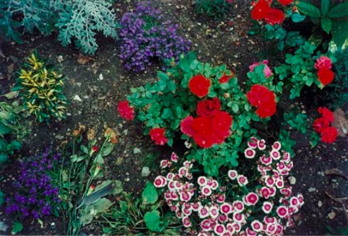

<!DOCTYPE html>
<html lang="en">
<head>
  <meta charset="UTF-8">
  <meta name="viewport" content="width=device-width, initial-scale=1.0">
  <link rel="stylesheet" href="_academic/academicStyles/styles.css">
  <script src="https://kit.fontawesome.com/cecc6c5222.js" crossorigin="anonymous"></script>
  <link href="https://fonts.googleapis.com/css2?family=Comfortaa:wght@600&family=Roboto+Mono:wght@300;400;700&display=swap"
  rel="stylesheet">
  <link rel="icon" type="image/png" href="assets/fav.png">
  <title>Edward D Bacal: Academic Work</title>
</head>
<body class="index">
  
  <button class="top">  
    <i class="fas fa-bars hamburger"></i>
  </button>

  <main class="wrapper">

<!-- Landing Page ================================================ -->

    <section class="landing" id="home">
      <div class="landingLeftColumn">      
        <h1>Edward Bacal</h1>
        
      </div>
  
      <div class="landingRightColumn">
        <div class="roles" id="roles">
          <h2>Research</h2>
          <span class="dash">/</span>

          <h2>Writing</h2>
          <span class="dash">/</span>
          
          <h2>Teaching</h2>
        </div>

        <nav> 
          <ul class="contents">
            <a href='#about'><li class="link">▽ Academic Bio</li></a>
            <span class="dash">/</span>   
        
            <a href='#web'><li class="link">▽ Research</li></a>
            <span class="dash">/</span>
            
            <a href='#graphics'><li class="link">▽ Publications</li></a>
            <span class="dash">/</span>
           
            <a href='#teaching'><li class="link">▽ Teaching</li></a>
          </ul>
        </nav>
      </div>
    </section> <!-- Landing Ends -->
  </main> <!-- close wrapper -->

<!-- Hamburger Nav ================================================ -->

<nav class="hamburgerMenu">
  

  <i class="far fa-times-circle hamburger hamburgerX" id="burger"></i>
 
  <ul class="hamburgerLi">
    <a href='#about' class="ham"><li class="link">▽ Academic Bio</li></a>
    <span class="dash">/</span>   

    <a href='#web' class="ham"><li class="link">▽ Research</li></a>
    <span class="dash">/</span>
    
    <a href='#graphics' class="ham"><li class="link">▽ Publications</li></a>
    <span class="dash">/</span>
   
    <a href='#teaching' class="ham"><li class="link">▽ Teaching</li></a>
    <span class="dash">/</span>

    <a href="#contact" class="ham"><li class="ham link">▽ Contact</li></a>
  </ul>
</nav>

<!-- Filler ================================================ -->

  <main class="wrapper">

    <div class="filler" aria-hidden="true">
      <span class="hide">⌀</span><span class="hide">⌇</span><span class="hide">⌔</span><span class="hide2">⌀</span><span class="hide2">⌇</span><span>⌔</span>
      <span>⌀</span><span>⌇</span><span>⌔</span>
    </div>      


<!-- About ================================================ -->

    <section class="about" id="about">
      <div class="headBand">
        <span class="hide">●</span><span>●</span>
        <h3>about</h3>
        <span>●</span><span class="hide">●</span><span class="hide">○</span><span>○</span><span>○</span><span>○</span>
      </div>
      
      <div class="aboutContainer">
        <div class="bio">
          <p class="hi">
            <span role="img" aria-label="wave emoji">👋 </span> Hi, I write about (and sometimes teach) contemporary art, visual culture, and critical theory.
          </p>
          <p class="pBackground">
            My academic work examines art and visual culture from the perspective that artworks aren't objects to describe as much as things to think through. In pursuing ideas that emerge from the dialogue of theory and the arts, I aim to better understand how aesthetic experience can present a model for being in the world. Specifically, I focus on the intersections of aesthetics, politics, and ethics, with particular interest in abstract and conceptual art from the 1960s to present. Currently, my research is split between two directions: the first considers how contemporary artists have revisited 1960s Minimalism in relation to global political crises, the second theorizes how aesthetics mediate the relation between embodied sexuality and the external world.
          </p>
        </div> <!-- end of bio container -->
          
        
      </div> <!-- end of container for top-half of about -->

      <p class="pBackground">
        I received my PhD and BA from the University of Toronto's Department of Art History (respectively 2018 and 2011) and my MA from University College London's Department of History of Art (2012). Since graduating, I've transitioned out of academia and into <span class="underline"><a href="index.html">web design/development</a></span>; however, I remain interested in advancing the research I've been developing for over a decade.
        <span class="break"></span>
        You can read more in my CV: <a href="assets/EdwardBacalCV.pdf"><i class="fas fa-paper-plane"></i></a>
      </div>
        
    </section> <!-- About Ends -->

<!-- Filler ================================================ -->

      <div class="filler" aria-hidden="true">
        <span class="hide">⌓</span><span class="hide">⌯</span><span class="hide2">⌁</span><span class="hide2">⌓</span><span>⌯</span><span>⌁</span>
        <span>⌓</span><span>⌯</span><span>⌁</span><span>⌓</span>
      </div>

<!-- Web Development ================================================ -->

    <section class="webDevelopment" id="web">
      <div class="headBand">
        <span class="hide">●</span><span class="hide">●</span><span>●</span><span>●</span>
        <h3 class="webDevHead">Research</h3>
        <span class="hide">●</span>
      </div>

      <div class="blueBox"> 
        <p>My research centres on modern and contemporary art and visual culture from North America, Latin America, and Europe. I'm particularly interested in abstract and conceptual art from 1960 to the present, especially practices that explore the political implications of art’s post-60s formal innovations, encompassing minimalism and post-minimalism, installation, conceptualism, experimental cinema, and related movements.

        My work is rooted in art theory, critical theory, and continental philosophy, touching on interdisciplinary debates in aesthetics and politics, post-structuralism and deconstruction, bio- and necro-politics, embodiment, ethics, Marxist critique, and various other topics.</p>
      </div> <!-- Skills Ends  -->
        
<!-- Web Projects ================================================ -->

      <div class="blueBox wp">
        <h4>Doctoral Research</h4>
        <div class="projectModal">
          
          <p class="doctoral">
            My dissertation considers the art of Felix Gonzalez-Torres, Doris Salcedo, Teresa Margolles, and Santiago Sierra, who redeploy the aesthetics of 1960s minimalism in relation to contemporary political crises. I look at how these artists use minimalist formal strategies to convey the socio-political abstraction of human life and, further, to address the conditions in which certain bodies fail to appear. I argue that these artists demonstrate how the body’s disappearance produces an abstraction: not the sign of a body but the index of its withdrawal from appearance (to invoke the etymological meaning of <em>abstrahere</em>). By portraying the material traces of the figure’s negation, they account for the aesthetic and political challenge of presenting anonymous bodies and beings. Their work thereby inverts minimalism’s concern with the relation of objective forms to embodied viewers, revealing art’s contradictory relation to inaccessible bodies. By exposing viewers to unknowable and imperceptible beings, they reject dominant ethical models based on the inter-subjective relation of autonomous individuals. Instead, they illustrate an ethics of co-existence that is irreducible to subject-object binaries and to the subjectivization of embodied life. In these respects, these artists make an important case for the political and ethical relevance of aesthetic abstraction today.
          </p>      

          <iframe width="560" height="315" src="https://www.youtube.com/embed/Q1JQYW8sXBk" frameborder="0" allow="accelerometer; autoplay; clipboard-write; encrypted-media; gyroscope; picture-in-picture" allowfullscreen></iframe>
        </div> <!-- end of project modal -->
        <h4>Prospective Research</h4>
        <div class="projectModal">
          
          <p class="doctoral">
            NB: Having undertaken a career outside academia, the extent to which I can or will independent pursue research projects is unclear; however, I still aspire to build on the work I've done so far<span role="img" aria-label="cool emoji">😎</span>
            <span class="break"></span>
            I hope to re-develop my dissertation into a manuscript that focuses on Doris Salcedo, Teresa Margolles, and Santiago Sierra. Together, these artists provide a critical account of globalization’s effects in the twenty-first century, encompassing the politics of citizenship, migration, security, violence, detention, and neoliberalism. I aim for this study to offer a theory of globalization itself, understanding it as the set of aesthetic and political technologies that organize bodies in space and time. 
            <span class="break"></span>
            I also hope to continue a new research project provisionally titled “Three Essays on the Aesthetics of Sexuality.” This study builds on my efforts to theorize the aesthetic relation between the human body and the external world, but shifting attention from violence and control to sensation and sexuality. Specifically, I consider how modern and contemporary artists draw on sexuality to disarticulate the relation of body to world, unbinding sensation from the framework of individual subjectivity. 
          </p>      
        </div>
      </div> 
    </section> <!-- end of Web Development -->

<!-- Filler ================================================ -->

    <div class="filler" aria-hidden="true">
      <span class="hide">⍛</span>
      <span class="hide">⎖</span><span class="hide2">﹆</span><span>⍛</span><span>⎖</span><span>﹆</span><span>⍛</span><span>⎖</span><span>﹆</span>
    </div>

<!--  publications ================================================ -->

    <section class="graphics"id="graphics">
      <div class="headBand" >
        <span class="hide">◦</span><span class="hide2">○</span><span>◦</span><span>○</span>
        <h3>Publications</h3><span>○</span><span>◦</span><span class="hide2">○</span><span class="hide">◦</span>
      </div>
        
        <div class="white">
          <div class="box">                
            <a href="https://edwardbacal.files.wordpress.com/2018/08/bacal_edward_d_201806_phd_thesis.pdf"><h5>Bodies Withdrawn: The Ethics of Abstraction in Contemporary Post-Minimal Art</h5> <i class="fas fa-external-link-alt"></i></a>
            <p>PhD Thesis (2018) — dissertation abstract:</p>
            ><button class="arrow click"><i class="far fa-caret-square-down"></i></button>
            
            <div class="toggle">
              <p>
                My dissertation considers the art of Felix Gonzalez-Torres, Doris Salcedo, Teresa Margolles, and Santiago Sierra, who redeploy the aesthetics of 1960s minimalism in relation to contemporary political crises. I look at how these artists use minimalist formal strategies to convey the socio-political abstraction of human life and, further, to address the conditions in which certain bodies fail to appear. I argue that these artists demonstrate how the body’s disappearance produces an abstraction: not the sign of a body but the index of its withdrawal from appearance (to invoke the etymological meaning of <em>abstrahere</em>). By portraying the material traces of the figure’s negation, they account for the aesthetic and political challenge of presenting anonymous bodies and beings. Their work thereby inverts minimalism’s concern with the relation of objective forms to embodied viewers, revealing art’s contradictory relation to inaccessible bodies. By exposing viewers to unknowable and imperceptible beings, they reject dominant ethical models based on the inter-subjective relation of autonomous individuals. Instead, they illustrate an ethics of co-existence that is irreducible to subject-object binaries and to the subjectivization of embodied life. In these respects, these artists make an important case for the political and ethical relevance of aesthetic abstraction today.
              </p>     
            </div>
          </div>

          <div class="box">
            <a href="http://asapjournal.com/toronto-biennial-of-art-the-shoreline-dilemma-edward-bacal/"><h5>Review: Toronto Biennial of Art: The Shoreline Dilemma</h5> <i class="fas fa-external-link-alt"></i></a>
            <p>ASAPJournal.com (December 17, 2019)</p>
          </div>

          <div class="box">
           <a href="https://canadianart.ca/reviews/muscled-rose/"><h5>Review: Muscled Rose at Scrap Metal Gallery</h5> <i class="fas fa-external-link-alt"></i></a>
            <p>CanadianArt.ca (August 14, 2019)</p>
          </div>

          <div class="box">
            <a href="https://edwardbacal.files.wordpress.com/2018/08/hrv-article.pdf"><h5>Pervasive Death: Teresa Margolles and the Space of the Corpse</h5> <i class="fas fa-external-link-alt"></i></a>
            <p>Human Remains and Violence 4/1 (2018) — essay abstract:</p><button class="arrow click"><i class="far fa-caret-square-down"></i></button>

            <div class="toggle">
              <p>I focus on two contemporary art installations in which Teresa Margolles employswater used to wash corpses during autopsies. By running this water through a fogmachine or through air conditioners, these works incorporate bodily matter butrefuse to depict, identify or locate anybody (or any body) within it. Rather, Margolles creates abstract works in which physical limits – whether of bodies or of art works –dissolve into a state of indeterminacy. With that pervasive distribution of corporealmatter, Margolles charts the dissolution of the social, political and spatial bordersthat contain death from the public sphere.In discussing these works, I consider Margolles’ practice in relation to the socialand aesthetic function of the morgue. Specically, I consider how Margolles turnsthe morgue inside out, opening it upon the city in order to explore the inopera-tive distinctions between spaces of sociality and those of death. In turn, I considerhow Margolles places viewers in uneasy proximity to mortality, bodily abjection andviolence in order to illustrate the social, political and aesthetic conditions by whichbodies become unidentiable. I ultimately argue that her aesthetic strategies matchher ethical aspirations to reconsider relations to death, violence and loss within thesocial realm.</p>  
            </div>
          </div>
          
          <div class="box">
            <a href="https://edwardbacal.files.wordpress.com/2018/08/bacal-writing-sample-concrete-and-abstract.pdf"><h5>The Concrete and the Abstract: On Doris Salcedo, Teresa Margolles and Santiago Sierra’s Tenuous Bodies</h5> <i class="fas fa-external-link-alt"></i></a>
            <p>Parallax 76 (2016) — essay abstract:</p><button class="arrow click"><i class="far fa-caret-square-down"></i></i></button>

            <div class="toggle">
              <p>The artists Doris Salcedo, Teresa Margolles, and Santiago Sierra are each significant for their politicized use of concrete. United by an affinity for the aesthetics of 1960s minimalist sculpture and a concern with the bio- and thanato- political management of life and death, these artists employ concrete in varied yet formally and conceptually complementary ways. This includes, but is not limited to, works such as Salcedo's Untitled series (1998), in which she fills furniture leftover by "disappeared" Colombians with cement; Margolles' Entierro (1999), in which she encloses a stillborn foetus inside a solid concrete block; and Sierra's performed piece, 24 Blocks of Concrete Constantly Moved During a Day's Work by Paid Workers (1999). <span class="break"></span> 
                In each of these pieces, concrete blocks reminiscent of minimalist sculptures come to respectively stand in for, contain, and interact with human bodies - specifically bodies whose tenuous socio-political status defines their corporeality. Given the forms of subjectivation that devalue their socio-political ontology, the figures of the desaparecido, the itinerant worker, and the clinical corpse denote subjectivities that imply absent, invisible, or otherwise virtual bodies. In other words, these are bodies that remain abstract, particularly in contrast to the palpable weight of concrete. To be sure, abstraction is not only typically defined in distinction to "the concrete," but also etymologically signifies withdrawal (in the sense of abstrahō: "to draw or pull from"), which here implies not just material intangibility but a form of absence. Accordingly, Salcedo, Margolles, and Sierra limn the tension between art's physical presence and the withdrawal of the body, such that concrete's formal rawness and imposing physical gravity invoke the recalcitrant vestiges of absent bodies. Meanwhile, the obdurate presence of these concrete masses advances minimalism's emphasis on the aesthetic relation between embodied viewers and physical structures. The minimalist aesthetic of these works is therefore not simply formal, but brings to bear aesthetic strategies that recognize embodiment as a condition of subjectivation. In sum, Salcedo, Margolles, and Sierra adopt these artistic strategies in order to confront the socio-political production and negation of subjectivity and corporeality. Inasmuch as their use of concrete thereby reveals novel engagements with abstraction and, more specifically, minimalist sculpture, they reveal the critical potential of concrete's aesthetic application. 
              </p>
            </div>
          </div>

          <div class="box">
            <a href="https://edwardbacal.files.wordpress.com/2018/08/framework-4-16.pdf"><h5>Up, Down, Left, Right: Some Thoughts on the Inverse, Reverse, and Double</h5> <i class="fas fa-external-link-alt"></i></a>
            <p>FrameWork 4-16 (2015)</p>
          </div>
        
          <div class="box">
            <a href="https://edwardbacal.files.wordpress.com/2018/08/edward-bacal-sharon_lockhart_and_steve_mcqueen_inside-the-frame-of-structural-film.pdf"><h5>Sharon Lockhart and Steve McQueen: Inside the Frame of Structural Film</h5> <i class="fas fa-external-link-alt"></i></a>
            <p>CineAction (2014)</p>
          </div>

          <div class="box">
            <a href="https://edwardbacal.files.wordpress.com/2018/08/edward-bacal-capitalism_and_contemporaneity_on_jeremy-dellers-battle-of-orgreave.pdf"><h5>Capitalism and Contemporaneity: On Jeremy Deller’s The Battle of Orgreave</h5> <i class="fas fa-external-link-alt"></i></a>
            <p>Kapsula (2014)</p>
          </div>
        </div>
      </section> <!-- End of Publications -->

<!-- Filler ================================================ -->

      <div class="filler">
        <span class="hide">✾</span><span class="hide">␦</span class="hide"><span>␥</span><span class="hide2">✾</span class="hide2"><span>␦</span><span>␥</span>
        <span>✾</span><span>␦</span><span>␥</span><span>✾</span>
      </div>

<!-- Contact ================================================ -->

      <section class="teaching" id="teaching">
        <div class="headBand">
          <span class="hide">●</span><h3 class="webDevHead">Teaching</h3><span class="hide">●</span><span>●</span><span>●</span><span class="hide">●</span>
        </div>
  
        <div class="blueBox teach"> 
          <p>
            My teaching interests encompass art and visual culture from the 1700s to the present. I am prepared to lead a wide range of courses in this field, ranging from general surveys to specialized graduate seminars, and to supervise appropriate research projects. I am also prepared to lead general courses in theory and methodology, architecture, cinema, and media. My experience and training has prepared me to lead innovative, experiential, and creative forms of learning (including online courses) and to effectively engage with cognitively and culturally diverse students.
            <span class="break"></span>
            My <a href="https://edwardbacal.files.wordpress.com/2018/10/bacal-teaching-dossier-october-25-2018.pdf">Teaching Dossier</a> details my experience, training, and methodology and includes my statement of teaching philosophy; teaching evaluations and feedback; teaching log; diversity statement; and sample syllabi, assignments, grading rubrics, and exam questions.
            <span class="break"></span>
            My teaching experience includes the following:
          </p>
          <ul>
            <li>• Independently designing and instructing three separate undergraduate courses: “Aesthetics and Politics since 1968”, “Art and Ideas: Bodies and Embodiment,” and “Modernism and Anti-Modernism: 1750-1900.” </li>
            <li>• Leading tutorials in two separate art history courses</li>
            <li>• Serving as a teaching assistant for eight classes.</li>
            <li>
              • Delivering guest lectures in four undergraduate courses.</li>
            <li>• Organizing pedagogical workshops for undergraduates.</li>
          </ul>
          <p>
            I have also completed the following training programs
          </p>
          <ul>
            <li>• “Teaching in Higher Education 500,” a semester long doctoral seminar on university pedagogy (Woodsworth College, University of Toronto)</li>

            <li>• “Community Engaged Learning Seminar for Doctoral Students,” a full-year program in socially active, experiential pedagogy (Centre for Community Partnerships, University of Toronto).</li>

            <li>• “Advanced University Teaching Preparation” certificate (Centre for Teaching Support and Innovation, University of Toronto). </li>

            <li>• Graduate Professional Skills certificate (School of Graduate Studies, University of Toronto).</li>
          </ul>
          <p>The following are a selection of online course presentations I've produced</p>
          <iframe width="560" height="315" src="https://www.youtube.com/embed/ujWyRf0R3m0" frameborder="0" allow="accelerometer; autoplay; clipboard-write; encrypted-media; gyroscope; picture-in-picture" allowfullscreen></iframe>
          <iframe width="560" height="315" src="https://www.youtube.com/embed/pAHvx5IhQr4" frameborder="0" allow="accelerometer; autoplay; clipboard-write; encrypted-media; gyroscope; picture-in-picture" allowfullscreen></iframe>
          <iframe width="560" height="315" src="https://www.youtube.com/embed/BLoFe2hACng" frameborder="0" allow="accelerometer; autoplay; clipboard-write; encrypted-media; gyroscope; picture-in-picture" allowfullscreen></iframe>
        </div> <!-- Skills Ends  -->
      </section>

<!-- Contact ================================================ -->

      <section class="contact blueBox" id="contact">        
        <div class="headBand">
          <span></span><span class="hide2">△</span><span>▽</span>
          <h3>Contact</h3><span>△</span><span class="hide2">▽</span><span></span>
        </div>

        <p>If you're interested in my work I'd love to hear from you! The easiest way to get in touch is to email me at <span><a href="mailto:edwarddbacalxgmoil.com" id="gmoil">edwarddbacal[at]gmail[dot]com</span></a></p>

        <p>You can also find me here:</p>
        <ul class="contactBox">
          <div class="item">
            <button><a href="https://www.linkedin.com/in/edwardbacal416/"><i class="fab fa-linkedin"></i><p hidden>LinkedIn</p></a></button>
          </div>

          <div class="item">
            <button class><a href="https://utoronto.academia.edu/EdwardBacal"></a></button>
          </div>
        </ul>
      </section> <!-- end of Contact  -->

      <div class="filler hide2" aria-hidden="true">
        <span class="hide">❀</span class="hide"><span>❀</span class="hide2"><span>❀</span><span>❀</span><span>❀</span> 
      </div>

    </main> <!-- end of wrapper -->

    <footer>
      <p class="wrapperNav"> Code, design, & Illustrations by Edward Bacal © 2020</p>
    </footer>

  <script src='https://code.jquery.com/jquery-3.2.1.min.js' integrity='sha256-hwg4gsxgFZhOsEEamdOYGBf13FyQuiTwlAQgxVSNgt4='crossorigin='anonymous'></script>
  <script src="script.js"></script>
  
</body>
</html>